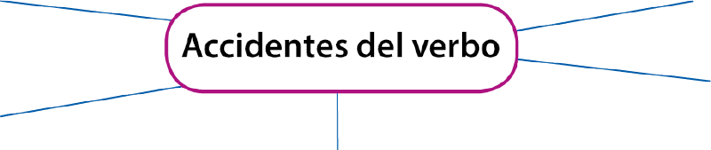

Comprendo para saber
Alumno:
Comprendo para saber
Alumno:
El verbo
Analicemos las siguientes oraciones:
La periodista entrevistó al alcalde. |
En la primera oración el verbo entrevistó indica acción. |
El alcalde desarrolla el proyecto. |
En la segunda el verbo desarrolla expresa proceso. |
El público está feliz por las declaraciones del alcalde. |
En la tercera el verbo estar expresa estado de ánimo. |
Desde el punto de vista semántico, el verbo es una palabra que expresa acción, estado o proceso.
Desde el punto de vista morfológico, el verbo es la palabra que más accidentes o variaciones y cambios tiene. Veamos:
Modo: indicativo, subjuntivo, imperativo |
Tiempo: presente, pasado, futuro |
|
|
Número: singular y plural
|
 |
Persona: primera, segunda, tercera
|
Voz: activa, pasiva |
La voz en la conjugación de los verbos
Para saber cuál es la relación semántica que existe entre el sujeto y el verbo, nos fijamos en la voz. Las formas verbales pueden estar en voz activa o en voz pasiva:
-
La voz activa indica que es el sujeto quien realiza la acción.
-
En la voz pasiva el sujeto no realiza la acción, la recibe. El que realiza la acción es el complemento agente.
Ejemplo: La periodista preparó la entrevista.
Ejemplo: La entrevista fue preparada por la periodista.
El modo del verbo
El modo es la manera de expresar la actitud del hablante por medio de las formas verbales.
|
Cuando el hablante quiere expresar un deseo o una posibilidad, utiliza una forma verbal en modo subjuntivo. Ejemplo: Hubiésemos querido que las obras culminen antes. |
Cuando el hablante quiere expresar la acción verbal como una acción cierta, real u objetiva, lo hace en modo indicativo.
Ejemplo: El alcalde informó sobre los avances de las obras. |
Cuando el hablante quiere expresar una orden o un deseo, utiliza el modo imperativo. Se da énfasis al verbo, expresándolo primero en la oración.
Ejemplo: Escuchen la entrevista al alcalde. |
El tiempo del verbo
El tiempo sitúa la acción del verbo en un momento determinado.
En el modo indicativo podemos encontrar los siguientes tiempos verbales:
|
Cuando la acción coincide con el tiempo en que se habla, está en tiempo presente.
Ejemplo: El alcalde responde las preguntas. |
Cuando la acción se realiza en un tiempo anterior al que se habla, está en tiempo pretérito perfecto simple.
Ejemplo: El alcalde informó sobre los avances de las obras. |
Cuando la acción se realizará en un tiempo posterior al que se habla, está en tiempo futuro.
Ejemplo: El alcalde responderá las preguntas. |